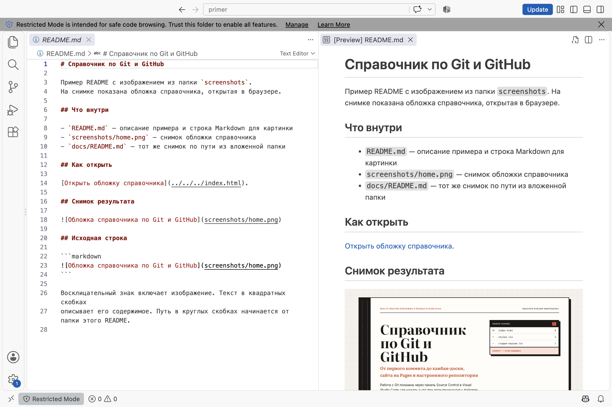
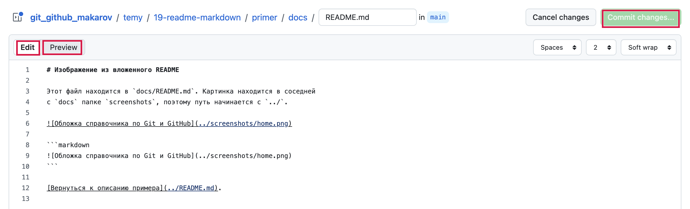
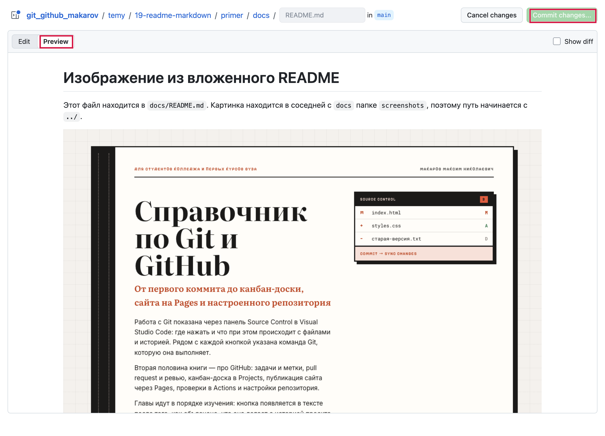
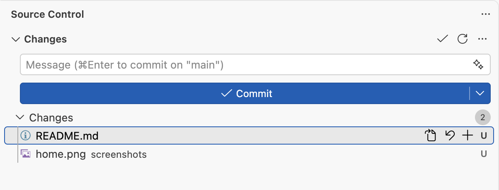
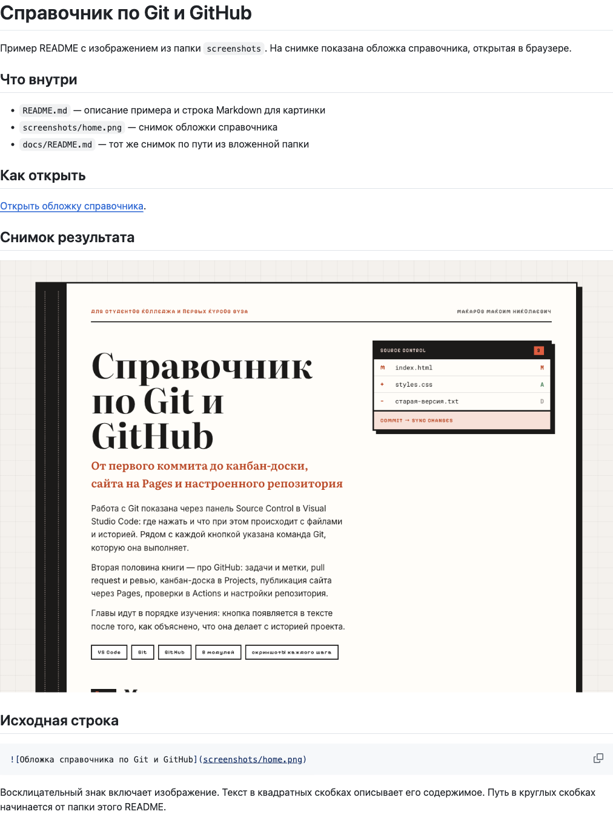
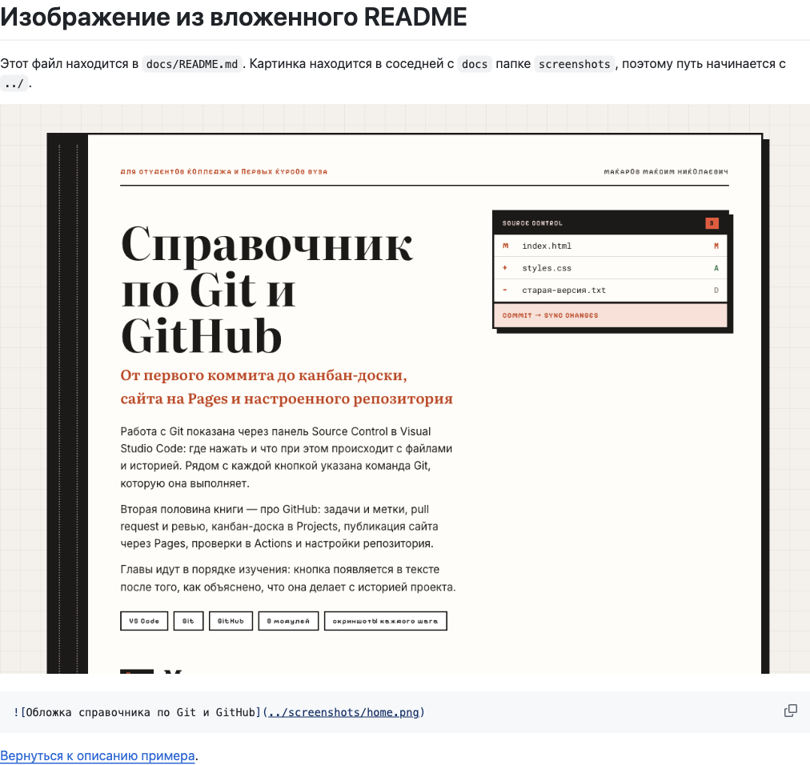

Справочник по Git и GitHub · модуль 4 · GitHub: описание репозитория
Глава 4.3
README.md: описание проекта,
Markdown и изображения
В этой главе разобран файл README.md: его место в репозитории, способы редактирования и просмотра, базовая разметка Markdown, ссылки и изображения. Примеры показывают, как составить короткое описание проекта и как проверить пути к файлам.
- Категория
- GitHub
- Уровень
- Начальный
- Что получится
- README с понятной структурой, ссылкой и изображением из папки проекта
- Перед началом
- Локальный репозиторий с хотя бы одним файлом
§1Задача README
README похож на обложку с краткой инструкцией: по нему определяют содержимое проекта до открытия файлов. README — вводное описание репозитория. Здесь это текстовый файл README.md. Расширение .md означает Markdown — разметку, где заголовок, список и ссылка записываются обычными символами.
По README определяют, как открыть результат, какие файлы составляют проект и какие ограничения у него есть. Пароли, токены и приватные ключи в README не записывают: файл доступен читателям репозитория.
Что даёт README
- Название и назначение. Посетитель понимает, что это за работа.
- Состав проекта. Список файлов помогает открыть нужный файл без перебора папок.
- Способ запуска. Короткая инструкция сообщает, что нужно открыть или выполнить.
- Наглядность. Изображение показывает результат там, где текста недостаточно.
README обычно лежит в корне репозитория — рядом с index.html, src или другими основными файлами. Внутри вложенной папки может находиться второй README для этой части проекта. Пути без начального / считаются от папки самого README. Чтобы проверить результат, файл открывают в просмотрщике Markdown.
§2Где GitHub показывает файл
GitHub распознаёт Markdown и отображает README под списком файлов репозитория. В репозитории хранится исходный текст. GitHub строит из него страницу. Исходник и результат — две формы одного файла.
README.mdобычный текст с разметкой
Если в репозитории несколько веток, GitHub показывает README открытой ветки. На главной странице по умолчанию открывается ветка по умолчанию, чаще всего main. Правка README в другой ветке не меняет текст на странице main, пока изменения не попадут в неё.
Имя файла. GitHub распознаёт распространённые варианты имени README, но в этой главе используется README.md: это привычное имя Markdown-файла. Регистр символов важен для путей к файлам на большинстве серверов, поэтому имя и ссылки пишут одинаково.
Изменить содержимое можно локально или в редакторе GitHub.
§3Как редактировать и смотреть результат
README можно менять локально в VS Code или на сайте GitHub. В обоих случаях редактируется текст Markdown, а результат проверяется в предпросмотре.
В VS Code: исходник и результат рядом
Откройте README.md. В палитре команд выполните Markdown: Open Preview to the Side — открыть предпросмотр сбоку. Слева останется исходник, справа появится результат.

На кадре решётки превратились в заголовки, дефисы — в пункты списка. Вместо строки  справа показана обложка. Предпросмотр читает PNG с компьютера; наличие файла в коммите проверяют отдельно.
На GitHub: Edit и Preview
На GitHub кнопка редактирования файла открывает текстовую вкладку. Вкладка Preview показывает, как GitHub обработает Markdown. При сохранении создаётся коммит в выбранной или новой ветке. Правку из новой ветки можно предложить через pull request — запрос на её включение в другую ветку. Связанные файлы проекта проверяют отдельно.
На кадре открыт вложенный README примера. Вкладка Edit содержит исходник, Preview — результат. Кнопка Commit changes… сохраняет правку коммитом, Cancel changes возвращает к файлу без сохранения.

В исходнике видны заголовок с решёткой, абзац и строка картинки с путём ../screenshots/home.png. Ниже строка повторена внутри блока кода: там она отображается текстом. При переключении вкладки содержимое файла сохраняется в редакторе.

В предпросмотре маркеры заменены оформлением, а строка картинки — изображением. Правки для этих кадров не сохранялись: после проверки выполнен Cancel changes.
Текстовый редактор сохраняет символы Markdown, но обычно не строит страницу результата. После правки файл всё равно проверяют в VS Code или в GitHub. Сохраняйте файл в кодировке UTF-8: так сохранятся русские буквы. Оформление текста задают символами Markdown.
§4Заголовки, абзацы и списки
Как в печатной инструкции, в README выделяют название, разделы и перечисления. В Markdown символ # в начале строки создаёт заголовок. Одна решётка означает заголовок первого уровня, две — второго. После решёток ставят пробел, затем текст. Пустая строка отделяет абзац или список от соседнего блока. Маркер - в начале строки создаёт элемент маркированного списка.
# Сайт-визитка Короткая страница с контактами. ## Что внутри - `index.html` — главная страница - `kontakty.html` — контакты
Сайт-визитка
Короткая страница с контактами.
Что внутри
index.html— главная страницаkontakty.html— контакты
Справа показан результат обработки того же текста. Это схема результата Markdown. Реальные кадры GitHub приведены отдельно.
В примере одна решётка задаёт название, две — раздел «Что внутри». Дефисы начинают два пункта списка. Имена файлов выделены обратными кавычками.
Пустые строки и уровни заголовков
Пустая строка отделяет абзацы и помогает читать исходник. Заголовок с # завершается переводом строки: пустая строка после него для разметки не обязательна. Для названия README достаточно одного заголовка первого уровня; разделы внутри обозначают двумя решётками.
По-простому: как разделяются абзацы
Пустая строка похожа на промежуток между абзацами письма. В Markdown она отделяет один абзац от другого. Перенос строки внутри абзаца в README обычно отображается пробелом.
Описание проекта.
Способ запуска.
Результат: Описание проекта. Способ запуска.
Описание проекта.
Способ запуска.
Результат: два отдельных абзаца.
Что есть что. Строки исходника — строки письма. Пустая строка — граница абзацев. У заголовков и списков есть собственные маркеры, поэтому правило абзацев не описывает всю разметку.
Внутри абзацев также выделяют слова, команды и ссылки.
§5Выделение, код и ссылки
Две звёздочки с каждой стороны выделяют фразу полужирным, обратные кавычки оформляют короткое имя файла или команду как код. Ссылка состоит из текста в квадратных скобках и адреса в круглых. Квадратные скобки задают видимый текст, круглые — адрес перехода.
**Как открыть:** дважды щёлкните `index.html`. [Открыть контакты](kontakty.html)
Как открыть: дважды щёлкните index.html.
Открыть контакты
Две звёздочки с каждой стороны делают фразу полужирной. Одиночные обратные кавычки оформляют имя index.html как код. В ссылке виден текст «Открыть контакты», а адрес kontakty.html ведёт к файлу рядом с README.
Ссылка не вставляет содержимое файла в README. Она создаёт переход. У строки изображения перед квадратной скобкой стоит восклицательный знак.
Несколько строк кода
Короткую команду выделяют одиночными обратными кавычками. Для нескольких строк используют по три обратные кавычки на отдельных строках. После открывающих кавычек можно указать язык: bash, python, html. GitHub использует его для подсветки.
```bash git status git log --oneline ```
Кавычки ограничивают блок. Внутренние строки отображаются как код; README сам команды не выполняет. Здесь первая команда проверяет состояние репозитория, вторая выводит краткую историю.
Ещё конструкции Markdown: курсив, цитата и список задач
| Запись | Результат |
|---|---|
*курсив* | курсив |
1. Первый шаг | Элемент нумерованного списка |
> Примечание | Блок цитаты |
- [ ] Проверить снимок | Невыполненный пункт списка задач |
- [x] Проверить снимок | Отмеченный пункт списка задач |
[Документация](https://docs.github.com/) | Ссылка на внешний сайт |
Таблица файлов: исходник и результат
Когда у каждого файла есть однотипные сведения, их сводят в таблицу. На GitHub столбцы Markdown разделяют символом |. Строка с дефисами отделяет заголовок от данных:
| Файл | Назначение | | --- | --- | | `index.html` | Начальная страница | | `styles.css` | Оформление |
| Файл | Назначение |
|---|---|
index.html | Начальная страница |
styles.css | Оформление |
В первой строке заданы названия двух столбцов. В двух нижних строках указаны файлы и их назначение. Для короткого перечня достаточно списка; таблица помогает сопоставить несколько свойств.
В README включают те конструкции, которые помогают объяснить проект. Для описания файлов и запуска соберём заголовки, список и короткую инструкцию.
§6Короткая структура README
Начальному проекту достаточно короткой структуры: название, одно-два предложения о назначении, состав файлов и способ открытия. Разделы идут в этом порядке, потому что читатель сначала узнаёт предмет, затем решает, нужен ли ему проект, и только после этого ищет файл.
# Сайт-визиткаНазвание. Как называется работа.
Назначение. Что находится в проекте.
## Что внутри
- `index.html` — начальная страница
- `screenshots/` — изображения для READMEСостав. Какие файлы открыть и где лежат изображения.
## Как открыть
Откройте `index.html` в браузере.Действие. Как получить результат из файлов проекта.
Для заголовка выбирают название работы, например «Сайт-визитка». Описание отвечает на вопрос о назначении. Список содержит только то, что нужно человеку, открывшему репозиторий впервые. Инструкция запуска соответствует действительному способу открыть проект; для сайта без сборки достаточно указать HTML-файл.
Имена разделов делают одинаковыми по уровню: после одного # используют ##, а внутри раздела при необходимости — ###. Не перескакивают с # сразу на ###. Длинные сплошные описания заменяют абзацами и списками, когда перечисляются однотипные вещи. Такое устройство встречается и в существующих README.
§7Реальные README
Структура опирается на два существующих файла: корневой README.md справочника git_github_makarov и README проекта sait-vizitka. Ниже приведены фрагменты из этих файлов.
Какие части взяты из двух существующих README
| Файл | Фрагмент | Зачем он в README |
|---|---|---|
git_github_makarov/README.md | # Справочник по Git и GitHub, затем раздел ## Устройство | Название сообщает предмет репозитория, раздел перечисляет основные папки и файлы. |
sait-vizitka/README.md | # Сайт-визитка, затем ## Что внутри и ## Как открыть | Коротко названы назначение сайта, файлы и действие для открытия результата. |
## Что внутри - `index.html` — главная страница - `kontakty.html` — страница контактов: почта, телефон, форма обратной связи - `styles.css` — оформление
Что внутри
index.html— главная страницаkontakty.html— страница контактов: почта, телефон, форма обратной связиstyles.css— оформление
Каждая строка списка называет файл и его назначение через тире. Из трёх строк видно, где находится начальная страница, где контакты и какой файл отвечает за оформление. Такой список полезнее перечня всех служебных файлов, если посетителю нужно открыть сайт. Изображение результата дополняет текстовое описание.
§8Изображения и папка screenshots
В этом примере изображение хранится отдельным файлом в репозитории. В README записывают строку Markdown с путём к нему. Для снимков результата создают папку screenshots рядом с README. Название показывает назначение папки и отделяет снимки от файлов сайта.
Для этой структуры строка изображения выглядит так:

Настоящий PNG лежит в примере README по пути screenshots/home.png. Его отображение на GitHub показано ниже. Открыть папку примера на GitHub.
!- Восклицательный знак перед квадратной скобкой задаёт изображение.
[Главная страница сайта]- Это альтернативный текст, или alt-текст. Он описывает изображение, когда файл не загрузился или его читает программа чтения с экрана.
(screenshots/home.png)- Это относительный путь от
README.mdк файлу. Сначала указана папкаscreenshots, затем косая черта и имяhome.png.
Сравните две похожие строки. Без ! Markdown создаёт ссылку, а с ! пытается показать сам файл как изображение.
[Открыть снимок](screenshots/home.png)
На странице будет текст «Открыть снимок». Картинка откроется после перехода по ссылке.

На странице появится изображение, если файл найден и его формат поддерживается браузером.
Файл home.png нужно добавить в Git вместе с README. Локально картинка может отображаться из папки на компьютере, но после отправки в удалённый репозиторий файл будет недоступен на GitHub, если он не вошёл в коммит. Перед коммитом проверьте в Source Control, что среди изменений есть и README.md, и screenshots/home.png.

Метка U означает Untracked: Git ещё не отслеживает файл. На кадре оба файла только обнаружены. Перед коммитом добавьте оба в индекс, как при сохранении изменений в модуле 2. Наличие PNG в предпросмотре само по себе этого не подтверждает.
На GitHub пример выглядит так. Здесь видны название проекта, состав файлов и изображение под заголовком «Снимок результата».

Тот же файл PNG отображается внутри страницы. Ниже GitHub показывает исходную строку в блоке кода. Папка screenshots выбрана для порядка: специального значения для GitHub это имя не имеет.
По-простому: картинка и адрес на неё
README похож на лист с подписью и адресом фотографии. Фотография хранится отдельно. Если передать только лист, адрес останется, а фотография окажется недоступна.
screenshots/home.pngЧто есть что. Лист — README. Фотография — PNG. Адрес — путь в круглых скобках. В репозиторий добавляют оба файла.
Когда README переносят во вложенную папку, путь к картинке пересчитывают.
§9Относительные пути и вложенный README
Относительный путь описывает расположение файла от папки текущего документа. Он не начинается с имени диска, домашней папки или адреса сайта. Поэтому один и тот же README работает после клонирования на другом компьютере и на GitHub.
Здесь README находится в папке docs. До home.png нужно сначала подняться из docs на один уровень, затем войти в screenshots:
docs/README.mdНачало: папка docs/../На уровень выше: my-project/screenshots/home.pngВойти в screenshots/ и открыть home.pngОранжевый блок отмечает документ, от папки которого считается путь. Две точки выводят из docs в my-project. Голубой блок — файл назначения. В Markdown весь маршрут записывают одной строкой:

Путь screenshots/home.png в этом вложенном README ведёт к docs/screenshots/home.png. В показанной структуре такого файла нет. На GitHub начальный / означает корень репозитория: /screenshots/home.png подошёл бы для этой структуры. Вариант с ../ сохраняет связь между соседними папками при переносе всей структуры в другой каталог.
Сравнение трёх путей: без ../, с ../ и от корня GitHub
| Запись в README | Откуда начинается поиск | Подходит для docs/README.md? |
|---|---|---|
screenshots/home.png | docs/ | нет, такого вложенного пути в схеме нет |
../screenshots/home.png | сначала на уровень выше docs/ | да |
/screenshots/home.png | от корня репозитория на GitHub | да, для показанной структуры; локальный просмотрщик может обрабатывать иначе |
В именах файлов учитывают регистр, пробелы и расширение. Если файл называется Home.png, путь home.png может работать на одном компьютере и не работать на GitHub. Пробел в имени делает путь менее читаемым и требует кодирования в адресах, поэтому в примерах используются строчные латинские буквы, цифры и дефисы: home-page.png. Кириллица поддерживается; латиница здесь служит соглашением об именах.
Во вложенном README примера используется ../screenshots/home.png. На GitHub проверена загрузка того же PNG размером 1280 × 900.

Кадр подтверждает, что переход на уровень выше ведёт к существующему файлу. Если картинка не появилась, сравнивают путь, имя и состав коммита.
§10Ошибки при публикации
Ошибки в именах и расположении файлов нарушают ссылки README. Проверка состоит из просмотра исходника, результата и списка изменений Git.
| Симптом | Причина | Что проверить |
|---|---|---|
| Вместо картинки виден alt-текст | Файл не найден или путь записан неверно | Папку, имя, расширение и путь от папки README |
| Картинка есть локально, но не на GitHub | PNG не добавлен в коммит | Есть ли screenshots/home.png среди изменений и в истории ветки |
| Ссылка открывает 404 | Путь начинается не от текущего README или имя отличается регистром | Где лежит README и куда ведёт каждый сегмент пути |
| Вместо изображения получилась ссылка | Нет символа ! перед квадратной скобкой | Сравнить с  |
| Текст на главной странице не изменился | README изменён в другой ветке | Выбранную ветку на GitHub и наличие коммита в main |
После отправки откройте README в браузере и нажмите на изображение правой кнопкой мыши, чтобы скопировать его адрес или открыть отдельно. Если адрес не открывается, возвращайтесь к относительному пути. Не исправляйте ошибку заменой пути на локальный адрес вроде C:\Users\...: такой путь существует только на одном компьютере. Проверку README завершают просмотром опубликованных ссылок и изображений.
§11Проверка себя
Чем README отличается от обычного текстового файла?
README — тоже текстовый файл, но GitHub распознаёт Markdown в файле README.md и показывает результат на странице репозитория. Содержимое файла при этом остаётся обычным текстом с символами разметки.
Почему строка [Снимок](screenshots/home.png) не показывает картинку?
У неё нет восклицательного знака перед квадратной скобкой. Это ссылка, которая открывает файл после нажатия. Для изображения нужна запись .
Где GitHub ищет screenshots/home.png из корневого README?
В папке screenshots, которая лежит рядом с README.md. Путь считается от папки текущего README.
Как записать путь к той же картинке из docs/README.md?
../screenshots/home.png. Две точки означают переход на уровень выше из docs, затем путь входит в папку screenshots.
Зачем проверять регистр в имени файла?
На GitHub путь к Home.png и путь к home.png могут означать разные файлы. Имя в строке Markdown должно совпадать с именем в репозитории символ в символ.
Самостоятельная работа
- Создайте в корне своего репозитория
README.md. Запишите заголовок, одно предложение о назначении и разделЧто внутрис двумя существующими файлами. - Откройте предпросмотр Markdown в VS Code. Проверьте, что заголовок, абзац и список отображаются раздельными блоками.
- Создайте папку
screenshotsи поместите в неё собственное изображение результата работы. Добавьте строкус точным именем своего файла. - Добавьте ссылку на один из перечисленных файлов:
[Текст ссылки](имя-файла). Проверьте переход в предпросмотре. - Добавьте README и файл изображения в индекс через Source Control. Создайте коммит и отправьте его на GitHub. Откройте README на GitHub и проверьте картинку и ссылку.
- Если в проекте есть папка
docs, создайте в ней короткий README и запишите путь к той же картинке через../. Объясните этот путь в одном предложении.
В результате README должен описывать существующие файлы, а изображение — загружаться на GitHub. Основные записи собраны в шпаргалке.
§12Шпаргалка и источники
# Название проектаодин заголовок первого уровня## Что внутридве решётки для раздела- `index.html` — описаниедефис, пробел, элемент[Текст](путь)переход по нажатиювосклицательный знак перед ссылкой../screenshots/home.png.. поднимает на один уровеньREADME.mdscreenshots/home.pngоба файла есть в измененияхИтог главы
- README.md описывает назначение, состав и способ открытия проекта.
- Markdown записывается обычным текстом и отображается GitHub как заголовки, списки, ссылки и изображения.
- Ссылка записывается как
[текст](путь), изображение — как. - Относительный путь начинается от папки README. Для
docs/README.mdпуть к файлу в корне начинается с../. - При хранении картинки в проекте в Git добавляют и файл изображения, и строку Markdown.
Источники и границы проверки
- GitHub Docs: Writing on GitHub — поддерживаемая разметка Markdown и предпросмотр.
- GitHub Docs: Creating and highlighting code blocks — обратные кавычки для кода.
- GitHub Docs: Basic writing and formatting syntax — ссылки, изображения и пути от корня репозитория.
- Visual Studio Code: Markdown and Visual Studio Code — предпросмотр Markdown в редакторе.
- Фрагменты
README.mdиз существующих локальных репозиториевgit_github_makarovиsait-vizitka, прочитанные при подготовке этой главы.
Проверено в GitHub: PNG из папки screenshots загрузился в README корня примера и в docs/README.md. Оба изображения имеют исходный размер 1280 × 900. Кадры Edit и Preview сняты без сохранения изменений. Поведение путей с начальным / сверено с GitHub Docs; в опубликованном примере используются переносимые пути от папки README.